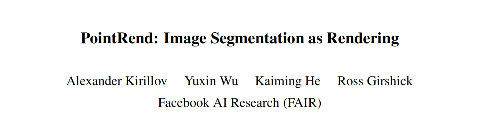

论文简介

- 会议：CVPR 2020
- arXiv: 1912.08193
- [PDF下载]
- 代码在 mmsegmentation 中有实现。
- 目前总引用数：225 Citations
Kirillov, A., Wu, Y., He, K., & Girshick, R.B. (2020). PointRend: Image Segmentation As Rendering. 2020 IEEE/CVF Conference on Computer Vision and Pattern Recognition (CVPR) , 9796-9805.
Abstract
该项工作创新地采用计算机图形学的渲染思路来解决计算机视觉领域的图像分割问题。
作者提出了 PointRend（Point-based Rendering）神经网络模块：该模块基于迭代细分算法，在自适应选择的位置执行基于点的分割预测。PointRend 可以与现有的最新模型结合，灵活地应用于实例和语义分割任务。定性实验表明，对于先前的方法过度平滑的区域，PointRend 可以输出清晰的对象边界。定量实验表明，PointRend 在 COCO 和 Cityscapes 数据集上的实例分割和语义分割任务的表现都有显著提高。在同样的内存和算力情况下，PointRend 与现有方法相比能输出更高的分辨率。
1 Introduction
用于图像分割任务的卷积神经网络通常在规则网格（regular grid）上操作：输入的是图像像素的规则网格，隐藏表征是规则网格上的特征向量，而输出则是基于规则网格的标签图。
规则网格会对对象区域过采样，而同时对对象边界欠采样。使得预测结果的轮廓变得模糊（如图 1 左上）。PointRend 的细节效果更好，并且分辨率高，甚至五指的轮廓都可以分割出来。

这篇论文的核心思想是将图像分割视为渲染问题，并利用计算机图形学中的经典思想来高效地“渲染”高质量标签图。作者将这一思想实现为一个新型神经网络模块——PointRend，该模块使用细分策略来自适应地选择一组非均匀点，进而计算标签。PointRend 可以整合到常用的实例分割元架构（如 Mask R-CNN）和语义分割元架构（如 FCN）中。PointRend 的细分策略所需的浮点数运算相比于直接密集计算减少了一个数量级，能高效地计算高分辨率分割图。
PointRend 不对输出网格上的所有点执行过度预测，仅对精心选择的点执行预测。
作者在 COCO 和 Cityscapes 基准数据集上评估了 PointRend 在实例分割和语义分割任务上的性能。定性结果显示，PointRend 能够高效计算不同对象之间的清晰边界。定量实验结果显示，PointRend 显著提升了 Mask R-CNN 和 DeepLabV3 的性能。
3. Method

PointRend 模块包含 3 个主要组件：
(i) 点选择策略（point selection strategy）：选择少量真值点执行预测，避免对高分辨率输出网格中的所有像素进行过度计算。 (ii) 点特征表示（point-wise feature representation）：使用每个选中点在 f 规则网格上的 4 个最近邻点，对 f 进行双线性内插，计算点的特征。 (iii) point head：一个小型神经网络，基于逐点特征表示预测标签。
3.1 Point Selection
PointRend 的核心思想是在图像中自适应地选择预测分割标签的点。理论上来说，这些点的位置应该在邻近高频区域（如边界区域）分布较为稠密。
作者提出的用于推断的点选择策略受到计算机图形学中自适应细分（adaptive subdivision）这一经典技术的启发。该技术仅在与近邻值显著不同的位置上进行计算，来高效渲染高分辨率图像；其他位置的值则保留原来的预测结果。
PointRend 使用双线性插值对其先前预测的分割进行上采样，然后在这个更密集的网格上选择N个最不确定的点（例如，binay mask 概率最接近 0.5）。然后，PointRend 为这 N 个点中的每一个计算点的特征表示（第3.2节）并预测其标签。这个过程不断重复，直到分割图被升采样到一个理想的分辨率。

PointRend 输入的特征图大小为 $M_0 \times M_0$，需要升采样至 $M\times M$，则采样点的数量不超过 $Nlog_2 \frac{M}{M_0}$ 。
Trtaining：Figure 4 的迭代策略对于利用反向传播训练神经网络不够友好。因此，训练过程采用基于随机采样的非迭代策略。
点采样策略选择特征图上的 N 个点进行训练。它的目的是偏向不确定区域的选择，同时保持一定程度的均匀覆盖。基于以下三个原则：
（i）Over generation（过度生成）：通过从均匀分布中随机抽样 kN 个点（k>1）来过度生成候选点。 （ii）Importance sampling（重要性抽样）：通过在所有 kN 个点对粗略预测插值，并计算特定任务的不确定性估计来关注具有不确定粗略预测的点。从 kN 个候选点中选出最不确定的βN 个点（β∈[0，1]）。 （iii）Coverage（覆盖范围）：其余（1-β）N 个点从均匀分布中采样得到。

3.2 Point-wise Representation
PointRend 通过组合细粒度特征（fine-grained features）和粗略预测特征（coarse prediction features），来构建所选点的逐点特征表示。
通过在特征图上对应位置进行双线性插值来计算特征向量。
- coarse prediction features：decoder_head1 得到的粗分割结果；
- fine-grained features：将 backbone 输出的几组多尺度特征图进行融合的结果。
3.3 Point Head
对于每个选定点的逐点特征表示，PointRend 使用简单的多层感知器（MLP）进行逐点分割预测。损失函数使用常规的交叉熵损失。
5. Experiments
分别进行了实例分割和语义分割实验。下面列出语义分割的实验结果。
采用 Cityscapes 语义分割数据集，采用 mIoU 评价指标。作者采用 DeeplabV3 和 SemanticFPN 作为语义分割网络。PointRend 中的粗略预测特征来自语义分割网络的输出，细粒度特征分别从 DeeplabV3 的 res2 层以及 SemanticFPN 的 P2 层插值得到。
（1）表 6 展示了 DeepLabV3 和 DeeplabV3 + PointRend 的对比情况。
DeeplabV3 + PointRend 在 Cityscapes 语义分割任务上的性能超过基线 DeepLabV3

（2）表 4 展示了 PointRend 在训练过程中使用不同点选择策略时的性能。

（3）模型在 Cityscapes 样本上的实例分割和语义分割结果。